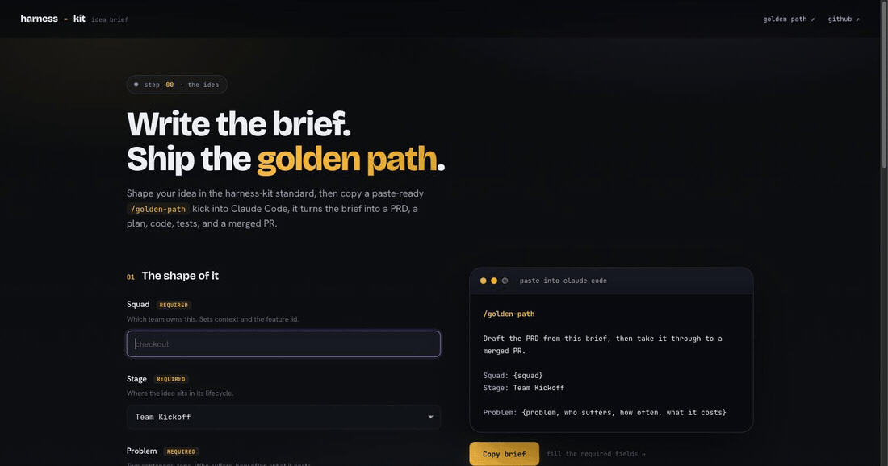
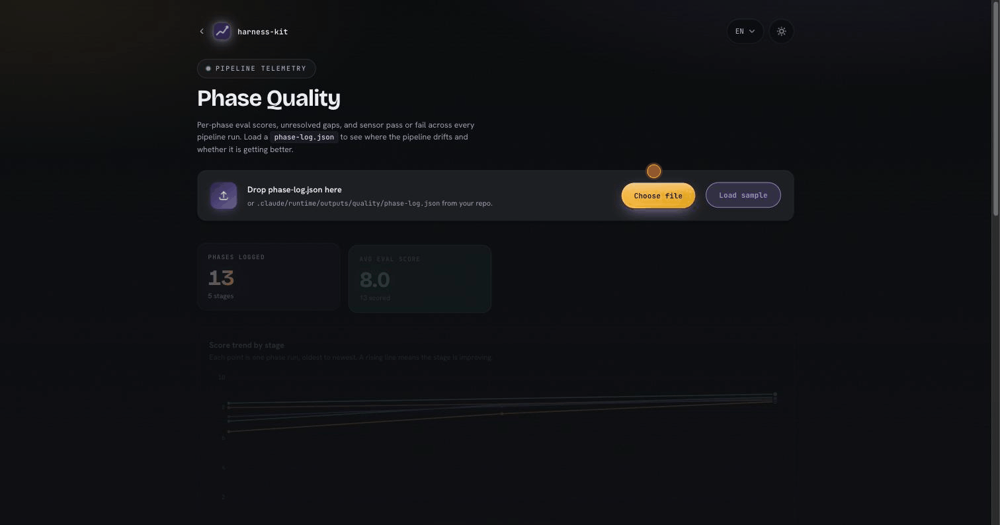

Idea to merged PR,
through one gated pipeline.
harness-kit is a set of Claude Code agents, a product manager, a staff engineer, and a system architect, that carry a raw idea through prd → prp → plan → dev → test → pr, with a pass/fail check and a scored review at every stage. Nothing advances on vibes.

the full pipeline, one walkthrough
Why this exists
Most features get built twice. Once in a hurry to see the thing work, and again when you realize nobody wrote down the problem it solved, the acceptance criteria drifted, and the review was a rubber stamp. The parts that make a feature correct are the first to get skipped when you move fast with an AI agent. harness-kit puts them back, and does the writing for you.
Shipping on vibes skips four things
A clear problem statement, real acceptance criteria, your conventions, and an honest review. Done by hand for every feature, they quietly rot.
The same pipeline every time
Quality stops depending on who is at the keyboard or how tired they are. Every feature takes the same six stages, in the same order.
Nothing advances weak
A deterministic sensor checks the structure, an LLM eval scores the quality. Weak output corrects itself before it reaches you.
You can watch it improve
Every approved stage records a score, so you know whether your specs, or your tests, are getting better across runs.
Without it, and with it
An agent writes code fast, and fast is where the expensive mistakes hide. Each row below is a step that has to pass before the next one starts, and harness-kit writes it for you.
| Without harness-kit | With harness-kit |
|---|---|
| The ticket lives in your head or a chat thread | A PRD with the problem, the customers, and a numeric success metric |
| "Done" is whatever the agent decided | A PRP with acceptance criteria you can check one by one |
| The agent edits whatever it finds | A plan that names the files and, with graph engineering, a gate that fails on any other file |
| Review is reading a diff and hoping | Every document scored against a rubric, retried until it passes 8.0 |
| Nobody remembers why the code is like this | Every requirement linked to the code that implements it and the test that proves it |
| Quality depends on the day | The same six steps every time, with a score history you can watch |
What you get: one command takes a raw idea to a merged pull request. Six documents, a check and a scored review at each stage, and two moments where a human decides, is this the right direction, and is this PR good to open. You spend your attention there, not on formatting a spec.
sequenceDiagram
actor You
participant PM as product-manager
participant Gate as sensor + eval
participant SSE as staff-engineer
participant GH as GitHub
You->>PM: idea
PM->>Gate: PRD
Gate-->>You: pass + score
You->>PM: approve direction
PM->>Gate: PRP
Gate-->>PM: pass + score
PM->>SSE: approved spec
SSE->>Gate: plan, then dev, then test
Gate-->>SSE: pass + score at each
You->>SSE: approve the PR
SSE->>GH: open PR
GH-->>You: merged
idea in, merged PR out · two human decisions, everything else on rails
Get started
From nothing installed to a merged PR. There are four setups and they all use the same commands; the options only change what happens inside some steps. Start with the default, you can switch later with one command.
Pick a setup
| Setup | Best for | What it adds | Needs | Cost |
|---|---|---|---|---|
| Plain (default) | trying it out, small teams, most features | the full gated pipeline | Claude Code, python3, git, gh | nothing extra |
| Jev judge | a judge that is not Claude grading Claude | quality scored by Jev, a different model, in under a second per document; Claude takes over when Jev is unsure | a TypeSafe API key | about $0.04 per million tokens |
| Graph engineering | shared codebases, regulated work, anything you must audit later | requirement ids, a trace file in every PR, a scope gate, links that turn VALIDATED or STALE | nothing extra for manifest; Python 3.12, a free NVIDIA key and joern for full | free |
| Graph and Jev | teams that want a neutral judge and full traceability | both of the above | both of the above | about $0.04 per million tokens |
Install
/plugin marketplace add Pierry/harness-kit /plugin install harness-kit@harness-kit # restart Claude Code, open your repo, then: /harness-kit:install
It copies the agents, commands, and hooks into .claude/, adds AGENTS.md and CLAUDE.md, and asks two questions: the eval judge (local or jev) and graph engineering (off, manifest, or full). Plain is local and off. Restart once more so the commands appear. Your own status line stays as it was.
Jev setups. Create a key at console.typesafe.ai/keys and run /hk:eval jev. A pasted key goes to .claude/settings.local.json, which git ignores.
Graph setups. /hk:graph manifest needs nothing else. For full, have a free key from build.nvidia.com ready and run:
/hk:graph full python3 .claude/scripts/graph.py setup # embedded FalkorDB + Graphiti, no Docker python3 .claude/scripts/graph.py index-code # Joern call graph, once python3 .claude/scripts/graph.py status
Updating. The plugin version is pinned, so a release does not reach you until you pull it: /plugin update harness-kit, restart Claude Code, then /harness-kit:update in each repo. New users get the latest on install automatically.
Brief to merge, in seven steps
You decide twice: at step 2 and at step 6. Everything else runs on its own gates.
Write the brief
Four lines after /golden-path: squad, problem, hypothesis, success metric. The brief builder checks each field for you. /pipeline:run "<idea>" runs the same steps and stops only at the two decisions.
The PRD, your first decision
The product manager agent writes the problem, customers, scope, and metrics with baselines. A script checks the sections, the eval scores it, and you approve the direction. A wrong problem caught here costs one rewrite, not a feature.
The PRP
The PRD becomes an engineering spec: files to change, patterns to follow, library docs, validation commands, and acceptance criteria you can check one by one.
The plan
The staff engineer agent writes what changes, in which files, in what order, with risks and test cases.
Dev
The agent implements the plan in small commits, runs your linters and type checkers as sensors, and follows .claude/conventions/ when you have it.
Test, the PR, your second decision
Your test suite runs and failures are reported by name. The agent prepares the PR title, summary, and test plan. You approve and it opens as a draft.
Merge
A monitor watches the PR and clears the pipeline when it merges. Start the next feature with a new brief.
What changes per setup
| Step | Plain | Jev judge | Graph engineering | Graph and Jev |
|---|---|---|---|---|
| Scoring | Claude sub-agent | Jev, Claude when unsure | Claude sub-agent | Jev, Claude when unsure |
| PRP | criteria | criteria | criteria with REQ ids, trace file | criteria with REQ ids, trace file |
| Plan | files to change | files to change | links with evidence, files become the scope | links with evidence, files become the scope |
| Dev | conventions and linters | conventions and linters | plus scope gate, IMPLEMENTS links | plus scope gate, IMPLEMENTS links |
| Test | report | report | plus VERIFIED_BY links | plus VERIFIED_BY links |
| PR | summary and test plan | summary and test plan | plus traceability table | plus traceability table |
Switch any time: /hk:eval local or jev, /hk:graph off, manifest, or full. /pipeline:continue resumes a feature and hk status shows where it is. Every detail, step by step, in Getting Started. More on each option below.
The four fronts
harness-kit is one product with four surfaces. Each does one job, and they chain: shape the idea, run the pipeline, watch its quality, drive it from a terminal. Start anywhere.
Turn an idea into the prompt
A web app that turns your idea into a paste-ready /golden-path prompt, with inline validation as you type.
Idea to merged PR
The agents and the gated flow. Carries the idea prd → prp → plan → dev → test → pr, one gate at a time.
Is each stage getting better?
Tracks each stage's eval score, open gaps, and sensor failures across every run, over time.
jump to it → FRONT 4 the cockpitDrive it from the terminal
A terminal UI over the pipeline. Every stage live, a stage run on a keypress, the two gates as prompts.
jump to it →front 2 is the engine · front 1 feeds it · front 3 measures it · front 4 drives it
Brief builder
A single web page that turns a rough idea into a well-formed /golden-path prompt. Fill squad, problem, hypothesis, and metric; it validates each field against the PRD conventions as you type, and builds the exact prompt to paste into Claude Code. No blank-page problem.

fields on the left, the prompt assembles live on the right
Hit Copy brief and paste the ready-made /golden-path kick into Claude Code. Already know the idea cold? Skip the builder and type /golden-path with the brief yourself.
The pipeline
Shipping a feature on vibes skips the parts that make it correct: framing the problem, writing acceptance criteria, holding the conventions, gating the review. harness-kit puts those back, without you hand-writing a single doc.
flowchart LR
idea([idea]) --> prd
subgraph PM[product-manager]
prd --> prp
end
subgraph SSE[staff-software-engineer]
plan --> dev --> test --> pr
end
prp --> plan
pr --> merged([merged PR])
two agents, one pipeline · each arrow is a gated handoff
Every stage produces a markdown artifact, gated by a deterministic sensor (pass/fail) and a scored eval (threshold 8.0). After the PR opens, an in-session monitor watches for merge and clears state on its own.
How one stage is gated
The same loop runs at every stage. The agent generates the artifact, a sensor checks its structure, an eval scores its quality, and only then does a human approve. Failures self-correct before they reach you.
flowchart LR
gen[generate artifact] --> sensor{sensor: structure check}
sensor -->|fail| gen
sensor -->|pass| eval{eval: LLM judge}
eval -->|"score < 8.0, retry x3"| gen
eval -->|"score ≥ 8.0"| approve[human approves]
approve --> next([next stage])
guides steer before · sensors give deterministic feedback · evals give inferential feedback · humans stay on the loop
A gate that cannot lie
Böckeler splits controls into computational, deterministic and CPU-run, and inferential, needing judgment. Every sensor here declares which it is, and the difference is the whole point: a sensor nothing machine-checked can never report a pass.
flowchart LR
s[sensor declares how it is enforced] --> c{Execution?}
c -->|computational| r[runner enforces it]
c -->|inferential| m[a model applies it]
r --> ok[pass]
r --> no[fail]
r --> err[broken spec is an error, never a pass]
m --> inf[logged inferential, never a pass]
a sensor that claims to be deterministic but checks nothing is an error, not a pass
This one is scar tissue. Sensors here once declared themselves deterministic hard gates while writing their checks as prose the runner could not parse. It returned 0, and the quality log recorded them as passed on every run, against a check that never happened. That is the illusion of quality the gates exist to prevent, so the harness now has its own tests, its own CI, and a ledger that fails the build when a sensor lies about how it is enforced.
Each agent, end to end
The same gated loop, once per agent. These are the three pipelines you actually run: what the command does, which sensors fire, which eval scores it, and where the gate sits. Every scored eval uses the same 8.0 threshold and the same three-attempt retry.
sequenceDiagram
actor You
participant PM as product-manager
participant S as sensors
participant E as eval (fresh judge)
You->>PM: /product-manager:run
PM->>PM: read intake artifact
PM->>S: PRD → structure, acceptance criteria
S-->>PM: pass or fail, retry up to 3
PM->>E: prd-quality
E-->>PM: score, needs ≥ 8.0
PM->>PM: approval marker on the PRD
Note over PM,E: no approved PRD, no PRP. the hook refuses to start it
PM->>S: PRP → structure, context, links
S-->>PM: pass or fail, retry up to 3
PM->>E: prp-quality, prp-context-readiness
E-->>PM: score, needs ≥ 8.0
PM-->>You: PRP ready for handoff
product-manager · prd → prp · reads the intake artifact, never stops to ask you
sequenceDiagram
actor You
participant SSE as staff-engineer
participant S as sensors
participant E as eval (fresh judge)
participant GH as GitHub
You->>SSE: /sse:run
SSE->>SSE: read approved PRP, detect area skill
SSE->>S: plan → plan-structure
S-->>SSE: pass
SSE->>E: plan-quality
E-->>SSE: score ≥ 8.0, approved
SSE->>S: dev → conventions, coverage, structure
S-->>SSE: fail means fix and retry, stop after 3
SSE->>E: dev-quality
E-->>SSE: score ≥ 8.0, approved
SSE->>SSE: detect and run the test suite
SSE->>E: test-quality, only if exit code is 0
E-->>SSE: score ≥ 8.0, approved
Note over You,GH: the PR gate. --local stops here for good
SSE->>GH: gh pr create --draft
GH-->>SSE: PR url
SSE->>E: pr-quality
E-->>SSE: score ≥ 8.0, approved
SSE->>GH: pr-monitor polls for the merge
GH-->>You: merged, state cleared
staff-software-engineer · plan → dev → test → pr · dev is the one stage gated twice, on the code and on the summary
sequenceDiagram
actor You
participant SA as system-architect
participant S as sensors
participant E as eval (fresh judge)
You->>SA: /system-design:run
SA->>SA: route to a topic skill, or generic design
SA->>S: design → structure, rigor
S-->>SA: a missing number or diagram blocks
SA->>E: design-quality
E-->>SA: score ≥ 8.0, approved
SA->>SA: adversarial review, 10 staff questions
SA->>S: review → structure, review variant
S-->>SA: questions answered, verdict present
SA->>E: design-review-depth
E-->>SA: score ≥ 8.0
SA-->>You: verdict ship, revise, or block
system-architect · design → review · optional front stage before the PRP · block is terminal
The evaluator is a fresh Claude sub-agent, or Jev when you pick it, and it gets only the artifact and the rubric, never the context that wrote it. The author never grades its own work. Full wiring, verbatim paths and rubrics, in the Agent Pipelines wiki page.
The golden path
One command, idea to merged PR.
Write the brief
Open the idea-brief builder and fill the fields, squad, problem, hypothesis, customers, metric. Inline validation holds you to the PRD conventions as you type.
Paste it
Hit Copy brief and paste the ready-made /golden-path kick into Claude Code:
/golden-path Squad: checkout Problem: Returning guests abandon checkout when a card is declined once … Hypothesis: If we add one-tap retry, then completion rises 5 points, because … Success metric: checkout completion, from 71% to 76% within 30 days
Approve and ship
All six gated stages run, PM (prd → prp) then Eng (plan → dev → test → pr). Approve each artifact when prompted; hk status shows where you are.
SSE flags pass straight through: --local, --sdd, --no-monitor. Already know the idea cold? Skip the builder and type /golden-path with the brief yourself.
Other ways to run
Every flow shares the same pipeline state, so you can switch between them mid-feature.
| You want | Run | Stages |
|---|---|---|
| Hands-off, idea to PR, two gates | /pipeline:run "<idea>" | intake → prd → … → pr |
| Idea to merged PR | /golden-path | prd → prp → plan → dev → test → pr |
| Spec only, align before any code | /product-manager:run | prd → prp |
| Small change, plan in your head | /sse:run | plan → dev → test → pr |
| Local only, no PR | /sse:run --local | plan → dev → test |
| Loop until the spec passes | /sse:sdd | plan → [dev↔test↔eval] ×3 |
| Resume after a break | /pipeline:continue | next pending stage |
Sensors are deterministic structure checks, they block on failure and Claude regenerates until they pass. Evals are LLM-judge rubrics scored 0-10, threshold 8.0, retried up to 3 times. Each stage is also its own command: /sse:plan, /sse:dev, /sse:test, /sse:pr. Every command and gate →
Quality dashboard
Scores used to get lost in chat once a stage was approved. The quality dashboard persists per-phase signal across every run and answers one question: is each stage getting better or worse over time?

drop a phase-log.json and see where the pipeline drifts
Every time a phase is approved, a post-eval hook appends one deterministic entry, zero token cost, to phase-log.json: the eval score, the count of open gaps, the sensors re-run pass/fail, and a derived status (ok / degraded / failed). Drop that JSON on the page (a standalone file, no build, no network) for KPI tiles, a score trend by stage, failure rate, average score vs the 7.0 threshold, the sensors that block most, and the full run table.
The cockpit
A terminal UI over the pipeline. Every stage live, a stage run on a keypress, humans on the loop at two gates.
open a feature, read each artifact, approve the gate, all from the terminal
It renders each artifact, runs a stage on a keypress, and turns the two human gates into modal prompts, the direction gate lists intake's open NEEDS REVIEW items. It reads state and artifacts straight off disk, so it stays in sync with any Claude Code session driving the same feature. It ships bundled, no extra dependencies land in your project.
npm i -g @pieerry/harness-kit # once, puts hk-tui on your PATH hk-tui # open the cockpit in the current repo hk-tui path/to/repo # or point it at one hk-tui -- "add one-tap retry to checkout" # seed intake
Keys: ↑↓/jk move · enter run the stage · tab focus the reader · a approve a gate, x hold · q quit. Needs a TTY and Node 18+. Full model: Autonomy and Orchestration & Subagents.
Options
All off or on their simplest setting until you change them. Each one is a single command and can be turned back at any time.
Local Claude or Jev
By default (local) a fresh Claude sub-agent scores each document. With jev, Jev by TypeSafe AI scores it instead. Jev is a different model family, so Claude no longer grades its own work. It answers each rubric item as an atomic yes/no check and hands the call to Claude when its unsure answers could flip the result. Paid, about $0.04 per million tokens.
Trace every requirement
manifest gives each acceptance criterion a REQ id, writes trace/{feature}.yml into the PR, and adds a scope gate that fails dev on any file the plan did not name. Links start PROPOSED and later turn VALIDATED or STALE. full adds an embedded FalkorDB graph with Graphiti on free NVIDIA models, plus the Joern call graph. No Docker.
Pipeline status bar
Off by default: install never touches your own status line. Install with HK_STATUSLINE=1 to replace it with the pipeline's current step. Without it, hk status gives the same answer on demand.
Context optimization
Optional, all local-first. As the repo and the harness grow, the tokens spent loading context and reading command output start to dominate. The tools below cut that, and they stack with the per-stage model tiers.
| Tool | Cuts | How |
|---|---|---|
| /context:pack | input | repomix snapshot of the target repo, cached per feature |
| /context:graph | input | graphify knowledge graph, query "what calls X" (~71x fewer tokens) |
| qmd | input | semantic search over the guides, returns the relevant excerpt not the whole file |
| rtk | output | shell proxy, compresses git/test/lint/grep output 60-90% |
| semble | input | finds code by intent, not by literal string |
| repowise | input | risk of a change and the tests it affects |
| context7 | input | current library docs, not what the model remembers |
| joern | input | call graphs: who calls what, blast radius of a change |
/context:pack and /context:graph ship with the harness and feed the plan and SDD-eval stages. qmd and rtk are third-party, install them yourself:
# rtk, output filter, auto-intercepts git/test/lint/grep brew install rtk rtk init -g # select Claude Code; rtk gain shows savings # see which context tools this repo can use .claude/scripts/context-tools.sh # qmd, semantic doc search over the harness guide tree npm install -g @tobilu/qmd setup/setup-qmd.sh # indexes the guide tree, then embeds (~2GB models, once)
Stages that read the target repo (PRP, plan, SDD eval, design) first run .claude/scripts/context-tools.sh and use what is installed: semble to find code by intent, repowise for risk and affected tests, context7 for library docs, Joern for call graphs. Anything missing falls back to grep, never to a failure.
qmd and rtk are not bundled. Rationale and measured wins in issue #2. Full tier order in context-strategy.md.
The agents
All registered in AGENTS.md. Each ships its own sensors, evals, guides, and skills.
Frame the problem
Turns a problem into an engineering-ready spec, a PRD then a PRP.
Ship the code
Turns an approved PRP into a merged PR, or a satisfied spec. Area skills auto-detected from the repo, plus a designer skill for new UIs.
Design the system
Turns a problem into a rigorous System Design Doc, then an adversarial review. Topic playbooks per classic design.
Foundations
This is not invented method. harness-kit is a concrete implementation of harness engineering, and the system-architect agent reasons from the established engineering canon.
Harness engineering
From Birgitta Böckeler (Thoughtworks / martinfowler.com). Every stage gate here is exactly this split.
- Harness engineering for coding agent users: guides (feedforward), sensors (deterministic feedback), evals (inferential feedback), humans on the loop.
- Maintainability sensors for coding agents: the sensor idea our structure checks implement.
The engineering canon
Behind the system-architect agent. Full mapping in design-method.md.
- Designing Data-Intensive Applications, Martin Kleppmann: reliability / scalability / maintainability as the spine.
- A Philosophy of Software Design, John Ousterhout: deep modules, simple interfaces, complexity is the enemy.
- Release It!, Michael Nygard: stability patterns: circuit breaker, bulkhead, timeout, backoff.
- Jeff Dean (numbers every engineer should know), Werner Vogels (design for failure), Pat Helland (immutability, events over mutable state), Leslie Lamport, Sam Newman, Gregor Hohpe.
The System Design series
The system-architect topic skills adapt one classic problem each, with the theory, diagrams, and references per design.
- The wiki: one page per classic problem: url-shortener, rate-limiter, search-engine.
Docs
Go deeper than this page.
the full front-door walkthrough→ Commands & gates
every command, every sensor and eval→ Architecture
stage anatomy, status bar, repo layout→ AGENTS.md
agent registry and path-by-path map→ Getting Started
the four setups, install, brief to merge→ Jev and System One
the Jev judge, atomic checks, escalation to Claude→ Graph Engineering
REQ ids, trace files, the scope gate→ Graph Theory
the model behind the trace graph→ Phase quality
per-phase score trend, failure rate, sensor blocks→